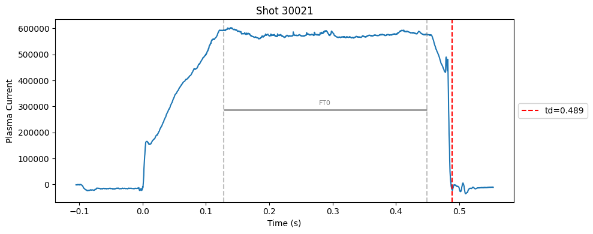
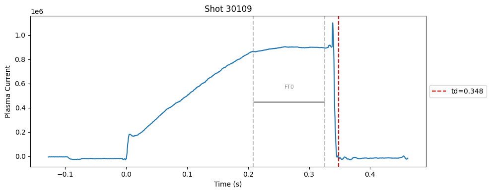
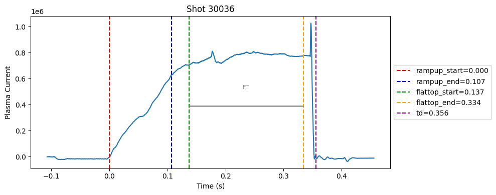
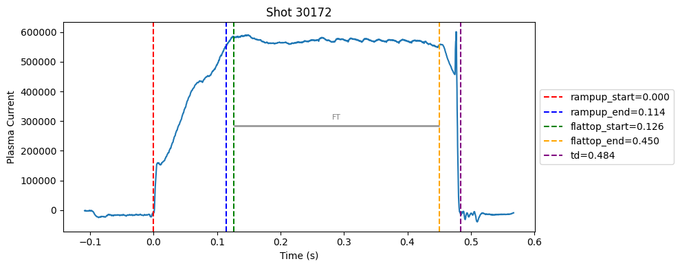
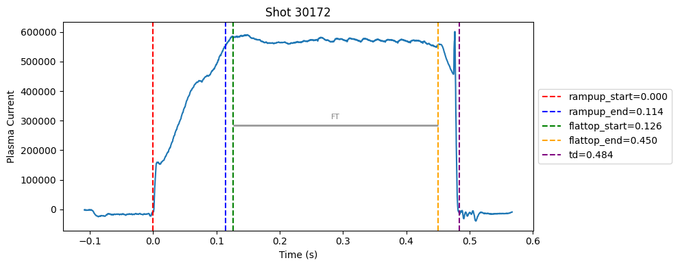
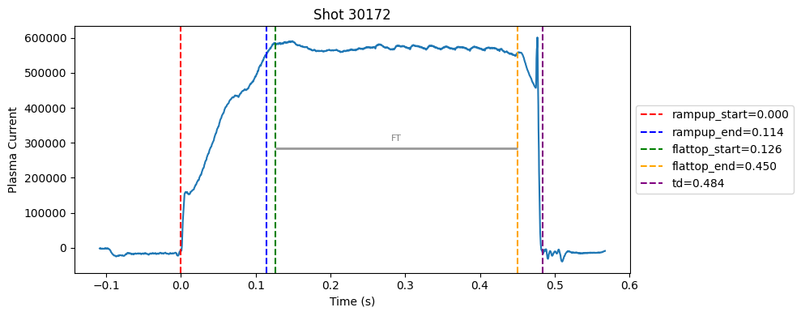

Disruption flat-top labelling with multiple segments#
I realised that a single flat-top can’t capture the true flat-top. In many cases, the flat-top is not a perfect plateau, it can contain spikes. So, I switched to a divide-and-conquer strategy. Instead of forcing one flat-top, I allowed multiple flat-top segments to be detected independently using the same standard deviation check and an added masking rules (e.g., above a minimum Ip, before disruption).
Comnbining these segments was straightforward. Please read the comments in combine_segments method.
Download the data#
Code to download just the summary from CSD3.
for i in {30001..30472}; do
rsync -avz --progress CSD3:/rds/project/rds-mOlK9qn0PlQ/fairmast/upload-tmp/level2/${i}.zarr/summary/ ~/Downloads/level2_summary/${i}/
done
import xarray as xr
import numpy as np
import matplotlib.pyplot as plt
from scipy.signal import savgol_filter, find_peaks
from scipy.interpolate import interp1d
import pandas as pd
import matplotlib.pyplot as plt
shot_ids_i_like = [30108, 30121, 30178, 30035, 30183, 30086, 30112, 30109, 30209]
# random shots ints
np.random.seed(0)
shot_ids = np.random.randint(30000, 30200, 10).tolist()
shot_ids = list(shot_ids) + shot_ids_i_like
shot_ids = sorted(set(shot_ids)) # remove duplicates and sort
shot_ids
[30009,
30021,
30035,
30036,
30047,
30067,
30086,
30103,
30108,
30109,
30112,
30117,
30121,
30172,
30178,
30183,
30192,
30195,
30209]
def detect_change_points(time, intensity, window_size=50, threshold=2.0):
"""
Detects change points based on the difference in moving average intensity.
Args:
- time (np.array): Time array.
- intensity (np.array): Intensity array.
In level 1 data, plasma current is in kA, in level 2 data it is in Amps. So, we divide by 1000 to get kA.
Otherwise, the gradient will be too high.
- window_size (int): Size of the window for calculating moving average.
- threshold (float): Threshold for detecting significant changes.
Returns:
- change_points (list): List of times when significant changes are detected.
"""
moving_avg = np.convolve(intensity/1000, np.ones(window_size) / window_size, mode='valid')
diff = np.abs(np.diff(moving_avg))
change_indices = np.where(diff > threshold)[0] + window_size # Adjust index for valid region
change_points = time[change_indices]
# If no change points detected, return None
if len(change_points) == 0:
return None
return change_points
class DisruptionDetector:
def __init__(
self,
ip_threshold=60.0,
disruption_window=0.05,
disruption_window_size=20,
disruption_poly_order=2,
disruption_prominence=10.0,
flat_top_window_size=51,
flat_top_tolerance=0.01,
flat_top_interp_kind="linear",
plot=False
):
# disruption detection
self.ip_threshold = ip_threshold
self.disruption_window = disruption_window
self.disruption_window_size = disruption_window_size
self.disruption_poly_order = disruption_poly_order
self.disruption_prominence = disruption_prominence
# flat top
self.flat_top_window_size = flat_top_window_size
self.flat_top_tolerance = flat_top_tolerance
self.flat_top_interp_kind = flat_top_interp_kind
self.plot = plot
def _detect_flattop(self, ip, time, td=None):
"""
Detects the flat-top region of the plasma current using standard deviation based wobbliness check.
"""
try:
# Only search before disruption (if given), to avoid false flat region after crash
# we use masking becasue standard deviation detects post disruption as a flat top.
if td is None:
print("td is none. can't mask post disruption zone.")
if td is not None:
mask = time < td
ip = ip[mask]
time = time[mask]
# Compute rolling standard deviation to find "flat" regions
window_pts = self.flat_top_window_size
ip_series = pd.Series(ip)
rolling_std = ip_series.rolling(window_pts, center=True).std() # https://pandas.pydata.org/docs/reference/api/pandas.DataFrame.rolling.html
# Identify indices where the std is below threshold (i.e., flat)
flat_idxs = np.where(rolling_std < self.flat_top_tolerance)[0]
#print(f"DEBUG: flat_idxs count = {len(flat_idxs)}")
if len(flat_idxs) == 0:
return np.nan, np.nan
# Split into continuous segments
diffs = np.diff(flat_idxs)
split_idx = np.where(diffs > 1)[0]
segments = np.split(flat_idxs, split_idx + 1)
# Pick the longest continuous flat segment
longest = max(segments, key=len)
# Extract start and end times
tmin = time[longest[0]]
tmax = time[longest[-1]]
return tmin, tmax
except Exception as e:
print(f"Flat-top detection failed: {e}")
return np.nan, np.nan
def detect_all_flattops(self, ip, time, td, min_duration=0.002, max_iters=10):
ip = np.array(ip)
time = np.array(time)
ip_masked = ip.copy()
ip_masked[ip < 2e4] = np.nan # already decided on 20k threshold
ip_masked[time >= td] = np.nan # td cut
segments = []
for _ in range(max_iters):
ft_start, ft_end = self._detect_flattop(ip_masked, time, td) # need to modify the flattop detection fucntion to not use td every single time, since it is being masked here.
if np.isnan(ft_start) or np.isnan(ft_end):
break
duration = ft_end - ft_start
if duration < min_duration:
print(f"Segment too short: {duration:.4f}s — stopping.")
break # stop the loop because we are finding flat-tops that are too short and meaningless, as it can be a flat line on the rampup area.
segments.append((ft_start, ft_end))
ip_masked[(time >= ft_start) & (time <= ft_end)] = np.nan # mask used part
return segments
def _detect_rampup_simple(self, flat_top_start):
return 0.0, flat_top_start
def _detect_rampup(self, ip, time, flat_top_start):
try:
if np.isnan(flat_top_start):
return 0.0, np.nan # can't proceed if flattop start is NaN, sure there is a better way to do this.
# Use data before flat-top only
mask = time <= flat_top_start
ip = ip[mask]
time = time[mask]
# Enforce minimum ramp-up duration
time_mask = time > 0.05
ip = ip[time_mask]
time = time[time_mask]
# Compute rolling gradient
ip_smooth = pd.Series(ip).rolling(window=self.flat_top_window_size, center=True).mean()
grad = np.gradient(ip_smooth)
grad = np.nan_to_num(grad)
# Ramp-up ends when gradient drops below a small threshold
grad_thresh = 0.7 * np.nanmax(grad)
# candidate_idxs = np.where(grad < grad_thresh)[0]
# if len(candidate_idxs) == 0:
# return 0.0, flat_top_start
# # Find first place where gradient becomes low (end of strong ramp)
# t_ramp_end = time[candidate_idxs[-2]]
high_grad_idxs = np.where(grad > grad_thresh)[0]
if len(high_grad_idxs) == 0:
t_ramp_end = flat_top_start
else:
t_ramp_end = time[high_grad_idxs[-1]]
return 0.0, t_ramp_end
except Exception as e:
print(f"Ramp-up detection failed: {e}")
return 0.0, flat_top_start
def combine_segments(self, segments):
"""
Sure I can use smart techniques to combines the segments, such as implement a distance parameter.
But based on my plots, I think we can just take the min and max of the segments. I know this is stupid, but it works.
The problem is there are huge spikes within the flattop but our iterative algo is able to find correct flat segments in the flattops irrespective of the distance.
So I think we can just take the min and max of the segments.
"""
if not segments:
return np.nan, np.nan
starts, ends = zip(*segments)
return min(starts), max(ends)
def run(self, shot, ip, time):
# remove early garbage
mask = time >= 0
ip = ip[mask]
time = time[mask]
change_points = detect_change_points(time, ip, window_size=self.disruption_window_size, threshold=self.disruption_prominence)
td = change_points[-1] if change_points is not None and len(change_points) > 0 else np.nan
flattop_segments = self.detect_all_flattops(ip, time, td)
# # For now, just take the earliest segment as representative
# if flattop_segments:
# ft_start, ft_end = flattop_segments[0]
# else:
# ft_start, ft_end = np.nan, np.nan
ft_start, ft_end = self.combine_segments(flattop_segments) # combine all segments and calc start and end of flattop
#ru_start, ru_end = self._detect_rampup(ft_start) # can stay as-is for now
ru_start, ru_end = self._detect_rampup(ip, time, ft_start)
if self.plot:
self._plot_with_segments(shot, ip, time, flattop_segments, td, ru_start, ru_end)
return {
"shot": shot,
"td": td,
"flattop_start": ft_start,
"flattop_end": ft_end,
"rampup_start": ru_start,
"rampup_end": ru_end,
"flattop_segments": flattop_segments, # all segments so we can plot and see what is going on
}
# larger window and threshold for standard deviation based flatness check
params = {
"ip_threshold": 60.0,
"disruption_window": 0.05,
"disruption_window_size": 20,
"disruption_poly_order": 2,
"disruption_prominence": 10,
"flat_top_window_size": 100,
"flat_top_tolerance": 10000,
"flat_top_interp_kind": "linear",
}
results = []
for shot in shot_ids:
ds = xr.open_zarr(f"./level2_copy/{shot}", consolidated=False)
ip = ds["ip"].values
time = ds["time"].values
detector = DisruptionDetector(**params)
result = detector.run(shot, ip, time)
results.append(result)
df = pd.DataFrame(results)
Segment too short: 0.0005s — stopping.
df.head()
| shot | td | flattop_start | flattop_end | rampup_start | rampup_end | flattop_segments | |
|---|---|---|---|---|---|---|---|
| 0 | 30009 | 0.18440 | 0.13240 | 0.15915 | 0.0 | 0.11990 | [(0.1323997106552126, 0.15914971065521266)] |
| 1 | 30021 | 0.48880 | 0.12755 | 0.44855 | 0.0 | 0.11505 | [(0.12754970932006857, 0.4485497093200689)] |
| 2 | 30035 | 0.21515 | 0.13165 | 0.19465 | 0.0 | 0.11490 | [(0.1316497573852541, 0.14564975738525412), (0... |
| 3 | 30036 | 0.35580 | 0.13730 | 0.33380 | 0.0 | 0.10680 | [(0.21904973506927516, 0.3337997350692753), (0... |
| 4 | 30047 | 0.62805 | 0.09480 | 0.60505 | 0.0 | 0.08205 | [(0.09479966259002703, 0.6050496625900275)] |
def plot_single_shot(shot_id, ip, time, labels_dict):
colors = ['red', 'blue', 'green', 'orange', 'purple']
#label_names = ['rampup_start', 'rampup_end', 'flattop_start', 'flattop_end', 'td']
label_names = [ 'td']
plt.figure(figsize=(10, 4))
plt.plot(time, ip)#, label="ip(t)")
for i, label in enumerate(label_names):
val = labels_dict.get(label, np.nan)
if not np.isnan(val):
plt.axvline(x=val, color=colors[i], linestyle='--', label=f"{label}={val:.3f}")
else:
plt.axvline(x=time[0], color=colors[i], linestyle=':', label=f"{label}=nan")
# plot individual flat tops
segments = labels_dict.get("flattop_segments", [])
for i, (start, end) in enumerate(segments):
plt.axvline(start, color="gray", linestyle="--", alpha=0.5)
plt.axvline(end, color="gray", linestyle="--", alpha=0.5)
plt.text((start + end)/2, max(ip)*0.5, f"FT{i}", ha="center", va="bottom", fontsize=8, color="gray")
for i, (start, end) in enumerate(segments):
# Get points within the segment for horizontal line level
segment_mask = (time >= start) & (time <= end)
if not np.any(segment_mask):
continue
segment_ip = ip[segment_mask]
level = np.median(segment_ip)/2
# Draw horizontal line and label
plt.hlines(level, start, end, color="gray", linewidth=2, alpha=0.8)
plt.xlabel("Time (s)")
plt.ylabel("Plasma Current")
plt.title(f"Shot {shot_id}")
plt.legend(loc="center left", bbox_to_anchor=(1, 0.5))
plt.tight_layout()
for result in results:
shot_id = result["shot"]
ds = xr.open_zarr(f"./level2_copy/{shot_id}", consolidated=False)
ip = ds["ip"].values
time = ds["time"].values
plot_single_shot(shot_id, ip, time, result)


Plot the important bits#
def plot_single_shot(shot_id, ip, time, labels_dict):
colors = ['red', 'blue', 'green', 'orange', 'purple']
label_names = ['rampup_start', 'rampup_end', 'flattop_start', 'flattop_end', 'td']
#label_names = [ 'td']
plt.figure(figsize=(10, 4))
plt.plot(time, ip)#, label="ip(t)")
for i, label in enumerate(label_names):
val = labels_dict.get(label, np.nan)
if not np.isnan(val):
plt.axvline(x=val, color=colors[i], linestyle='--', label=f"{label}={val:.3f}")
else:
plt.axvline(x=time[0], color=colors[i], linestyle=':', label=f"{label}=nan")
# horizontal flat-top bar
ft_start = labels_dict.get("flattop_start", np.nan)
ft_end = labels_dict.get("flattop_end", np.nan)
if not np.isnan(ft_start) and not np.isnan(ft_end):
mask = (time >= ft_start) & (time <= ft_end)
if np.any(mask):
ft_level = np.median(ip[mask])*0.5
plt.hlines(ft_level, ft_start, ft_end, color="gray", linewidth=2, alpha=0.8)
plt.text((ft_start + ft_end)/2, max(ip)*0.5, f"FT", ha="center", va="bottom", fontsize=8, color="gray")
plt.xlabel("Time (s)")
plt.ylabel("Plasma Current")
plt.title(f"Shot {shot_id}")
plt.legend(loc="center left", bbox_to_anchor=(1, 0.5))
plt.tight_layout()
for result in results:
shot_id = result["shot"]
ds = xr.open_zarr(f"./level2_copy/{shot_id}", consolidated=False)
ip = ds["ip"].values
time = ds["time"].values
plot_single_shot(shot_id, ip, time, result)


 

